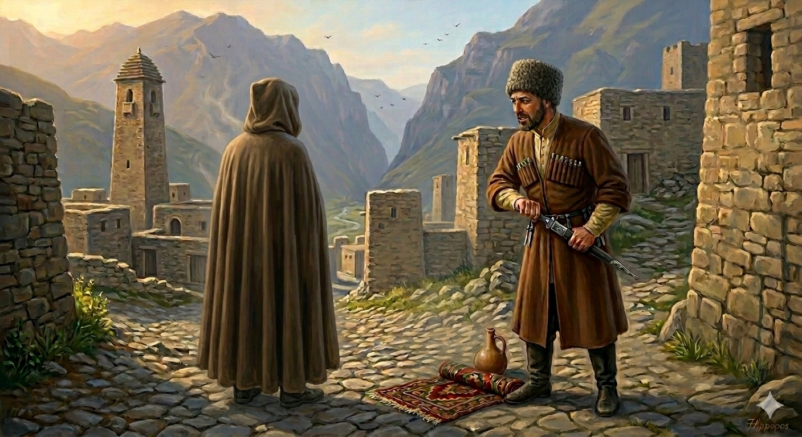

И.А. Дахкильгов. Хьехаме дувцарш - поучительные рассказы-притчи.
И.А. Дахкильгов. Хьехаме дувцарш - поучительные рассказы-притчи. Из ингушского фольклора.

ВиӀийца бола безам
Мохьмад-пайхамара воӀ ИбрахӀим кхелхача хана, Маддана гӀолла дӀаяьржа хиннаяр, йоах, кхерзача дулха хьадж. Пайхамара коа таьзет латтача дийнахьа дулх а кхорзаш, паргӀата ваьнна лелаш цхьа саг волаш халахийтта хиннад Турпал Ӏаьлийна. Из саг ве лаьрхӀад цо. Тур а даьккха, шахьара гӀолла дӀаволавеннав Турпал Ӏаьла. Мохьмад-пайхамара аьнна хиннад цунга: - Хьай тур бетта чу долла. Малдан чу тахан цхьаккха саг вац хьона дулх кхорзаш. ВоӀ кхалхар бахьан долаш, са доги еррига чеи ше-шегӀа йоагаш кхрзалуш я хьона. Цудухьа кхийттай хьох кхерзача дуилха хьадж. Селла дукха веза даьна ший воӀ.
РУССКИЙ
Любовь отца к сыну
Когда у пророка Мухаммеда умер его сын Ибрахим, по городу Медине распостранился запах жареного мяса. Это очень задело зятя пророка Турпала Али. Он возмутился, что в день, когда в доме пророка траур, кто-то ублажает себя вкусной пищей. Решил Турпал Али рассправиться с этим человеком. Он оголил свою саблю и пошел по городу. Узнав это, пророк Мухаммед ему сказал: "Вложи саблю в ножны. В Медине никто сегодня не жарит мясо. От горя у меня сами собою горят сердце и все нутро, поэтому и пахнет жареным мясом". Настолько отец любил своего сына.
ENGLISH
The love of a father for his son
When the Prophet Muhammad's son, Ibrahim, died, the smell of roasting meat spread throughout the city of Medina. This greatly upset the Prophet's son-in-law, Ali. On a day of mourning in the Prophet's household, he was outraged that someone could be indulging in such delicious food. Turpal Ali decided to confront the man responsible. He drew his sabre and set off through the city. Upon learning of this, the Prophet Muhammad said to him: "Sheathe your sabre. No one in Medina is roasting meat today. My heart and insides are burning with grief, which is why you can smell roasted meat." This shows just how much a father loved his son.
НОХЧИЙН
ВоӀаца болу безам
Мохьмад-пайхамаран воӀ ИбрахӀим кхелхинчу хенехь, Мадданахула дӀайаьржина хилла йар, боху, кхаьрзинчу жижиган хьожа. Пайхамаран кевне тезет лаьттачу дийнахь жижиг а кхорзуш, паргӀат ваьлла лелаш цхьа стаг волуш халахетта хилла Турпал Ӏелийна. И стаг вен сацам бина цо. Тур а даьккхина, шахьарехула дӀаволавелла Турпал Ӏела. Мохьмад-пайхамаро аьлла хилла цуьнга: - Хьай тур беттан чу долла. Маддан чу тахана цхьа а стаг вац хьуна жижиг кхорзуш. ВоӀ кхалхар бахьана долуш, сан деган йерриге чоь ша-шах йогуш кхарзалуш йу хьуна. Цундела кхетта хьох кхаьрзинчу жижиган хьожа. Сел дукха веза дена шен воӀ.
ПОГОВОРКИ
Атта да наьха кулгашца нитташ баха. - Легко чужими руками крапиву рвать.Даьр доаде дика саг везац, доацар тӀада дика саг вез. - Не нужно быть хорошим, чтобы уничтожить доброе дело; сотворить его – это и есть добрый поступок.Зовзачун кий наха йихьай. - Папаху срывают (и уносят) только с трусливого.Хьувзаш бале а никъ тол. - Пусть дорога и извилиста, все же она лучше, чем бездорожье.Дезарах ваттӀар хиннад. - Лопнул позарившийся на многое.Жена хьалха а, кхыметтел, бодж лелаш хул. - Даже в овечьем стаде есть вожак-козел.Йиший дог вешийца, веший дог хьунагӀа. - Сестра сердцем жалостлива к брату, а сердце брата тянется в лес.ЙӀовхалах модж мустаялар тов шелалах пӀелг бохьабечул. - Пусть (лучше) от жары борода повылезет, чем от холода палец отморозить.Киса доккхагӀа долаш вар дукхагӀа веза. - Толстосума больше любят.Кулгах шонкаш йоахкачун меттах шонкаш яьхкац. - У кого руки в мозолях, у того язык без мозолей.Кхелага даьнна дош – ловзадаьнна пилхьа. - Дело, переданное в суд (местный), - шут, пляшущий на канате.Кхувргда, яхаш, ваьгӀар кхийнавац. - Твердящий “успею” никогда не успевает.КъайлагӀа аьннар гайна-ганза дист эккх. - Тайно сказанное рано или поздно будет всеми услышано.Къонах говраи сесагаи дикагӀа вовз. - Конь и жена (лучше других) узнают (настоящего) мужчину.Маьршача сага беттал бийса хоза хет, къу сага хала хет беттала бийса еча. - Мирный человек любит ночь лунную, вор – безлунную.Муш хаьдар – вир дахар. - Повод (веревка) оборвался – ишак ушел.Наьха йоахарех лора ца веннар сийдоацача ваьннав. - Кто не остерегался сплетен, тот ходил оклеветанным.Нахага кхаьча бала бовзаргбац, шийга кхаьчача мара. - Тяжесть чужого горя познается лишь тогда, когда горе придет к тебе самому.Оалхазаро а цӀонал ший бӀена чу яц. - Даже птица не гадит в своем гнезде.Сатоха ховш хиларца вайзав денал дола саг. - Мужественного человека узнают по его умению быть терпеливым (сдержанным).Ткъамаш доацар – оалхазар дац, ший мохк боацар – адам дац. - Птица без крыльев – не птица, человек без родины – не человек.Хи йисте ваьхачоа хина гечув дайзад. - Живущий у реки знает и брод через нее.“Эггар хозагӀа дола хӀама да”, - къайгага аьлча, къайго ший кӀориг енай, йоах. - Когда вороне сказали: “Принеси то, что ты считаешь самым красивым”, - она, говорят, принесла своего птенца.